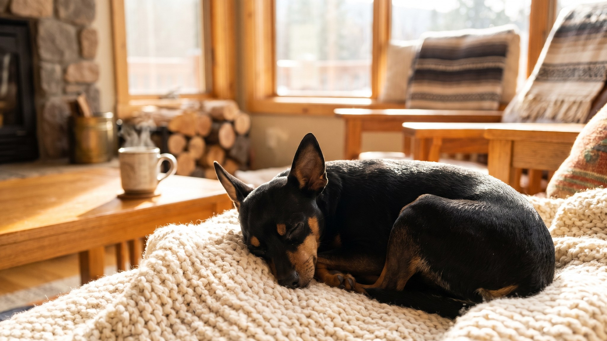

Пражский крысарик весит меньше 2,6 кг — это один из самых маленьких псов на планете. Но кто думает, что такая собака будет спокойно лежать на подушке, ошибается: ратлик активен, любопытен и требует настоящего партнёра, а не декоративного владельца. Ниже — честный разбор породы: хрупкость, теплолюбивость, одежда, характер и кому пражский крысарик подойдёт без оговорок.
🐾 Ваш питомец — пражский крысарик?
Заведите профиль в AnimaLife: приложение запомнит породу, возраст и вес и будет подсказывать по уходу именно для неё. Вопросы AI-ветеринару — круглосуточно и бесплатно.
Завести профиль → Завести в MAX →
У вас iPhone? AnimaLife есть в App Store
Пражский крысарик (Pražský Krysařík) — чешская порода, официально признанная FCI в 1980-х. Несмотря на схожесть с русским тойтерьером и чихуахуа, это самостоятельная порода с чётким стандартом: вес до 2,6 кг, рост 20–23 см, короткая блестящая шерсть, большие стоячие уши, характерный чёрно-подпалый или коричнево-подпалый окрас.
Слово «крысарик» — не оскорбление, а профессия. Исторически эти собаки работали в замках и на кораблях, уничтожая грызунов. Отсюда — скорость реакции, охотничий азарт и неожиданно крепкая для такого тела энергия.
Маленький размер — это не только умилительно, но и ответственно. Пражский крысарик хрупкий физически: тонкие косточки легко травмируются при падении с дивана, неловком прыжке или в игре с крупными собаками.
Пражский крысарик мёрзнет. Это не прихоть — это физиология: маленькое тело с короткой шерстью и почти нулевым подкожным жиром теряет тепло быстро. При температуре ниже +5°C одежда на прогулке обязательна — не как аксессуар, а как защита от переохлаждения.
Что выбирать:
При этом ратлик — не тепличное создание. Летом он с удовольствием бегает, играет и исследует, просто не оставляйте его на солнце без тени и воды.
Пражский крысарик — собака-компаньон в полном смысле. Он следует за хозяином по квартире, хочет участвовать во всём и плохо переносит одиночество на целый день. Привязанность сильная, почти кошачья по тактильности: любит лежать рядом, любит контакт.
При этом по темпераменту ратлик — активная собака. Ему нужно движение: две прогулки в день по 20–30 минут с возможностью побегать. Дома он охотно играет, но без физической нагрузки накапливает энергию и начинает «выносить» квартиру.
С воспитанием медлить не стоит — маленький размер не отменяет базовых команд. «Ко мне», «сидеть», «место» нужны с первых недель. Ратлики обучаемы и с удовольствием учатся, если занятия короткие и с поощрением.
Кому подходит: людям, которые проводят много времени дома, одиноким владельцам, пожилым людям с умеренной активностью, тем, кто хочет маленькую, но настоящую собаку-партнёра.
Кому не подходит: семьям с очень маленькими детьми, тем, кто часто уезжает или работает по 10 часов вне дома, людям, которые не готовы следить за температурным режимом и ограничивать прыжки.
🐾 У вас пражский крысарик?
AnimaLife соберёт уход под породу: к каким болезням есть склонность, что проверять по возрасту, чем кормить и когда пора к врачу. Бесплатно, прямо в мессенджере.
Собрать план ухода → Собрать в MAX →
У вас iPhone? AnimaLife есть в App Store
🐾 Понравился разбор?
Подпишитесь на канал — каждый день разбираем по одному тревожному симптому у кошек и собак: что в пределах нормы, а когда пора к врачу. Подпишитесь, чтобы не пропустить разбор, который может спасти здоровье вашего питомца.